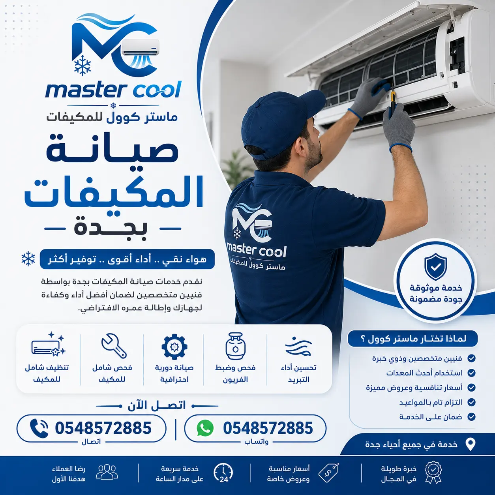

شركة صيانة مكيفات بجدة | تصليح وإصلاح أعطال المكيفات 24 ساعة بالضمان
الدليل الهندسي الشامل والخدمة المعتمدة الأولى في صيانة وتصليح مكيفات سبليت، شباك، مركزي، ودكت بجدة. تشخيص كهروميكانيكي دقيق بأحدث الأجهزة الرقمية، فحص الكابستور والكارتات الإلكترونية، كشف تهريب الفريون، وإصلاح الكمبروسر مع ضمان كتابي معتمد يصل إلى 6 أشهر وسرعة وصول خلال 30 دقيقة بكافة أحياء جدة.
ضمان معتمد حتى 6 أشهر طوارئ 24/7 خلال 30 دقيقة قطع غيار أصلية بالكرتونة فحص إلكتروني رقمي متطور
متى يحتاج المكيف إلى صيانة عاجلة؟ (10 علامات حرجة)
في مناخ مدينة جدة الساحلي شديد الحرارة والرطوبة، يتعرض نظام التكييف لضغط تشغيلي هائل يفوق 18 ساعة يومياً. تأخير الصيانة عند ظهور أولى علامات الخلل يؤدي حتماً إلى تلف الضاغط (الكمبروسر) واحتراق اللوحات الإلكترونية، مما يضاعف تكلفة الإصلاح 4 أضعاف. إذا لاحظت أياً من هذه المؤشرات العشرة، يجب طلب شركة صيانة مكيفات بجدة متخصصة فوراً:
1. خروج هواء دافئ أو بدون تبريد
المروحة تدور ولكن الهواء بدرجة حرارة الغرفة نتيجة عدم إقلاع الضاغط أو نقص شحنة الغاز.
2. صوت زنّة متكررة (Humming) وفصل سريع
محاولة الكمبروسر للدوران مع عجزه بسبب تلف الكابستور، مما يؤدي لفصل الأوفرلود الحراري.
3. تنقيط أو تسريب مياه داخل الغرفة
انسداد مجرى الصرف الداخلي بالأتربة أو كسر حوض التصريف أو تجمد ملفات المبخر.
4. تراكم طبقة ثلج على المواسير والمبخر
دلالة واضحة على تهريب وسيط التبريد وهبوط ضغط المبخر أو انسداد شديد في مجرى تدفق الهواء.
5. نزول القاطع الكهربائي (Circuit Breaker)
حدوث ماس كهربائي (Short Circuit) أو انهيار عزل ملفات الضاغط والمروحة وملامستها للأرضي.
6. ضعف دفع الهواء من فتحات الجريلات
اتساخ مروحة البلاور الأسطوانية أو تلف محرك المروحة أو هبوط سرعات كارت التحكم الإلكتروني.
7. صدور روائح احتراق أو روائح كريهة
تفحم الأسلاك والترامل الكهربائية، أو نمو الفطريات والبكتيريا العفنة في حوض الصرف الداخلي.
8. وميض لمبات اللوحة وظهور كود عطل
توقف المكيف ذاتياً وإظهار رموز رقمية (مثل E1, E4, EC) تفيد بوجود عطل نظامي يستدعي التشخيص.
9. عمل متواصل دون فصل (Short-Cycling)
عطل ثرموستات الحرارة أو ضعف قدرة التبريد مما يجعل المكيف يعمل 24 ساعة ويرفع فاتورة الكهرباء.
10. قفزة مفاجئة في فاتورة استهلاك الكهرباء
انسداد الزعانف وتآكل ملفات المكثف مما يجبر المحركات على سحب تيار كهربائي (أمبير) مضاعف.
نصيحة مهندسي ماستر كوول بجدة:
عند سماع صوت زنّة أو نزول القاطع، **أوقف تشغيل المكيف فوراً من مفتاح الجدار (DP Switch)** ولا تعيد تشغيله تكراراً؛ لأن المحاولات المتكررة تؤدي لاحتراق ملفات الضاغط بالكامل وتلف الكارت، بينما كان العطل الأصلي مجرد مكثف بسيط لا يتعدى سعره عشرات الريالات!

خدمات صيانة وإصلاح أعطال المكيفات بالضمان المعتمد في كافة أحياء جدة - ماستر كوول 0561110020
2
دليل رموز وأكواد أعطال المكيفات الشائعة بجدة وحلولها
تحتوي مكيفات السبليت الحديثة (جري، كارير، ميديا، ال جي، دايكن، يورك، ماندو) على نظام تشخيص رقمي متقدم يظهر كوداً محدداً على الشاشة عند وقوع عطل. إليك جدول الأكواد الأكثر شيوعاً في منازل جدة مع أسبابها وطريقة حلها لدى مهندسي ماستر كوول:
إذا ظهر كود عطل مختلف على شاشة مكيفك، يمكنك تزويد فني ماستر كوول بنوع الموديل ورقم الكود عبر الواتساب الفوري لتحديد العطل بدقة وإحضار القطع المناسبة في أول زيارة.
3
التشخيص الهندسي لضعف التبريد وخروج هواء دافئ بجدة
شكوى "المكيف شغال بس ما يبرد" هي أكثر شكاوى الصيانة تكراراً في مدينة جدة خاصة في شهور الصيف الملتهبة (مايو إلى سبتمبر). من الخطأ الشائع الافتراض المباشر بنقص الفريون وشحنه دون تشخيص؛ إذ تكشف إحصائياتنا الميدانية أن 60% من حالات ضعف التبريد تعود إلى أسباب فنية أخرى:
أ. انسداد ملفات التكثيف الخارجية بالأتربة والرطوبة البحرية
تتحد ذرات الغبار مع رطوبة هواء البحر الأحمر في جدة لتكوّن طبقة طينية صلبة تسد مسامات زعانف الألمنيوم (Condenser Fins). هذا الانسداد يمنع تبديد حرارة الغاز، فيرتفع ضغط الطرد فوق 450 PSI وتفصل حماية الضاغط الحرارية (Overload) بعد 5 دقائق من العمل. الحل يبدأ من خدمة تنظيف المكيفات بجدة الكيميائي العميق.
ب. تلف أو هبوط سعة مكثف تشغيل الضاغط (Capacitor)
عندما تهبط سعة الكابستور بنسبة تزيد عن 10%، يفشل الكمبروسر في الإقلاع ضد ضغط الغاز المرتفع، ويبقى محرك المروحة فقط قيد العمل ليدفع هواء الغرفة العادي دون أي تبريد.
ج. انسداد صمام التمدد أو الأنبوب الشعري (Capillary Tube)
تراكم شوائب الزيت المحترق أو الرطوبة داخل دورة التبريد يؤدي لانسداد جزئي في الكابلري، مما يخلق فرق ضغط غير طبيعي ويمنع تدفق سائل الفريون إلى المبخر الداخلي، مسبباً تجمداً موضعياً وضعفاً شديداً في التبريد.
د. تهريب وسيط التبريد R410A أو R22
فقدان الغاز يهبط بضغط خط السحب لأقل من 100 PSI، مما يؤدي لتكون ثلج على ماسورة السحب الرفيعة ثم انعدام التبريد بالكامل. تتطلب هذه الحالة فحصاً متخصصاً عبر شحن فريون المكيفات بجدة بعد لحام موضع التهريب.
4
صيانة وإصلاح كمبروسر المكيف (الضاغط) بجدة
الضاغط هو قلب الدورة الميكانيكية للتكييف وأغلى أجزائه ثمناً. قبل التسرع بالحكم على احتراق الكمبروسر، يجري مهندسو ماستر كوول سلسلة من الاختبارات التشخيصية الدقيقة:
A
فحص مقاومة ملفات C-R-S
قياس المقاومة بين أطراف المشترك (Common)، والتشغيل (Run)، وبدء الإقلاع (Start). يجب أن تساوي قيمة (C to S) + (C to R) قيمة المقاومة بين (R to S) تماماً، وإلا فالملفات مقطوعة.
B
اختبار العزل الأرضي (Megger Test)
فحص العزل الكهربائي بين أطراف التوصيل وجسم الضاغط المعدني للتأكد من عدم وجود انهيار في العازل يتسبب في التماس كهربائي ونزول القاطع فوراً.
C
معالجة القفشة الميكانيكية (Seized)
في حال تعليق البساتم أو التروس دون احتراق الملفات، نستخدم جهاز عزم البدء الفائق (Hard Start Kit SPP6) لتوليد عزم بنسبة 500% لتحرير الضاغط بنجاح دون الحاجة لتغييره.
وفي حال ثبوت احتراق الضاغط بالكامل، نوفر استبدال الضاغط بآخر أصلي معتمد مطابق لمواصفات المصنع (رووتاري Rotary، ترددي Reciprocating، أو عاكس إنفرتر Inverter) مع غسيل شبكة الأنابيب النحاسية بسائل R141b لإزالة رواسب الكربون المحترقة والأحماض، واستبدال فلتر المجفف (Filter Drier)، وعمل فاكيوم عميق، مع ضمان يصل إلى سنة كاملة على الضاغط الجديد.
يمثل مكثف الإقلاع والتشغيل (Dual Run Capacitor) المسؤول الأول عن تزويد محرك الكمبروسر ومحرك مروحة المكثف بالعزم الكهربائي وزاوية الطور اللازمة للدوران. صيف جدة الحارق ودرجات الحرارة التي تتجاوز 45 مئوية داخل الصندوق المعدني للوحدة الخارجية تتسبب في جفاف الزيت العازل داخل الكابستور وتلفه سريعاً.
سماع صوت زنّة واضحة من الكمبروسر كل 3 إلى 5 دقائق دون بدء دوران.
توقف مروحة الوحدة الخارجية أو دورانها ببطء شديد وباتجاه عكسي أحياناً.
قراءة سعة منخفضة بنسبة أكثر من ±5% عند الفحص بجهاز قياس السعة بالمايكروفاراد (μF).
معايير كابستورات ماستر كوول:
كابستورات أصلية معتمدة تتحمل درجات حرارة تشغيل حتى 85 درجة مئوية (Class B/C).
عمر تشغيلي مصنف حتى 10,000 ساعة عمل متواصلة ومقاوم للصدمات الكهربائية.
مطابقة السعة الدقيقة لجهازك (مثل 35+5 μF أو 45+5 μF أو 50+5 μF أو 60+5 μF).
ضمان كتابي معتمد لمدة 3 أشهر ضد أي عيوب مصنعية أو هبوط في السعة.
6
صيانة الكارتات واللوحات الإلكترونية وحساسات الحرارة بجدة
تعتبر اللوحة الإلكترونية (PCB Board) هي العقل المدبر لكافة عمليات التكييف، ومع انتشار مكيفات الإنفرتر الذكية بجدة، أصبحت أعطال الكارتات تتطلب مهندسي إلكترونيات تكييف محترفين ومعدات فحص دقيقة بدلاً من الاستبدال المكلف للوحة كاملة:
إصلاح كارتات الإنفرتر (Inverter Driver PCB): معالجة احتراق موديول القدرة المتكاملة (IPM) وترانزستورات IGBT المسؤولة عن تحويل التيار وتغيير تردد دوران الضاغط، وحل مشاكل انقطاع التردد دون الحاجة لشراء كارت جديد يكلف مئات الريالات.
استبدال ريليهات التشغيل ومحولات الجهد: صيانة دوائر التغذية الكهربائية (Power Supply Stage)، تغيير الفيوزات السيراميكية، واستبدال مكثفات التنعيم التي تتلف بسبب تذبذب الجهد الكهربائي في بعض أحياء جدة.
شحن الفريون دون سد ومعالجة مكان التهريب هو إهدار تام للمال، لأن الغاز سيتسرب مجدداً خلال أيام أو أسابيع قليلة. في ماستر كوول، نطبق البروتوكول المعتمد عالمياً في معالجة تهريب وسيط التبريد:
1. كشف موضع التسريب الميكروسكوبي:
ضغط الدورة بغاز النيتروجين الجاف الخامل حتى 250 - 300 PSI، واستخدام أجهزة الكشف الإلكترونية الحساسة (Sniffer) ومحاليل الفحص المتخصصة لاكتشاف أدق الشروخ في فليرات التوصيل النحاسية أو أكواع المبخر والمكثف.
2. لحام النحاس بأسياخ الفضة الأمريكية:
لحام الشروخ باستخدام لهب الأكسي-أسيتيلين وأسياخ سبائك الفضة عالية النقاوة (15% Silver Brazing Rods) مع تمرير تيار خفيف من غاز النيتروجين لمنع تأكسد الماسورة من الداخل وتكوين شوائب كربونية تسد الكابلري.
3. التفريغ العميق بماكينة الفاكيوم (Vacuum):
سحب الهواء وبخار الماء من شبكة النحاس بواسطة مضخة تفريغ ثنائية المرحلة (Two-Stage Vacuum Pump) حتى الوصول إلى ضغط أقل من 500 ميكرون، لضمان نقاء دورة التبريد وخلوها من الرطوبة القاتلة للضاغط.
4. الشحن الرقمي الموزون بالفريون الأصلي:
تعبئة وسيط التبريد الأمريكي الأصلي (Honeywell أو Chemours R410A / R22) بالميزان الإلكتروني بدقة الجرام وفق لوحة بيانات المصنع، مع فحص ضغط السحب (120-130 PSI لغاز R410A) وضمان كتابي على عدم التهريب.
8
صيانة وعلاج تسريب المياه من المكيف السبليت داخل الغرفة
تساقط قطرات الماء من الوحدة الداخلية على الأثاث والجدران من أكثر المشاكل المزعجة في منازل جدة، وتحدث بنسبة 90% نتيجة أحد العوامل التالية:
انسداد خرطوم الصرف بالعوالق الفطرية
رطوبة جدة العالية مع الأتربة تشكل طمي وبكتيريا جيلاتينية تسد مجرى خرطوم التصريف. نقوم بضخ النيتروجين والماء المضغوط لتسليك المجرى بالكامل.
ميلان تثبيت الوحدة الداخلية على الجدار
تركيب غير مستوٍ بالمسطرة المائية يتسبب في تجمع الماء بالجانب المعاكس لفتحة الصرف وفيضانه. نقوم بإعادة وزن المسطرة وتثبيت الحامل الجداري بإحكام.
تجمد وذوبان الثلج المفاجئ على المبخر
عند نقص الفريون يتكون ثلج كثيف على الكويل، وحين يفصل المكيف يذوب الثلج بكميات تفوق قدرة حوض الصرف فيفيض للخارج. يتطلب فحص ضغط الغاز ومعالجة الشحنة.
تلف أو شرخ في حوض التكثيف البلاستيكي
تآكل أو تشقق حوض الصرف بسبب الحرارة وقدم المكيف. نقوم بلحام الحوض بمواد كيميائية مانعة للتسريب أو استبداله بحوض جديد.
9
تشخيص الأصوات غير الطبيعية في المكيف وحلولها الهندسية
الأصوات الغريبة الصادرة من المكيف هي بمثابة لغة تحذيرية لجهازك قبل وقوع تلف كارثي. إليك دلالة كل صوت وطريقة معالجته لدى ماستر كوول:
نوع الصوت
المصدر المحتمل
السبب الفني الدقيق
طريقة الإصلاح
صوت صرير حاد (Squealing)
مروحة الوحدة الداخلية أو الخارجية
جفاف شحم وتآكل رولمان بلي (Bearings) محرك المروحة أو احتكاك المحور.
مكيفات السبليت الجدارية هي الأكثر استخداماً في شقق وفلل ومكاتب جدة. لكونها تتكون من وحدتين منفصلتين متصلتين بشبكة أنابيب نحاسية وأسلاك تحكم، فإن صيانتها تتطلب تناغماً تاماً بين الفحص الداخلي والخارجي:
على الرغم من انتشار السبليت، لا تزال مكيفات الشباك تحظى بانتشار واسع في مباني جدة والشقق المفروشة والملحقات نظراً لقوة تحملها وسهولة صيانتها. تشمل خدماتنا المتخصصة لمكيفات الشباك:
علاج مشكلة تجمد الشباك
حل مشكلة تكون كتلة جليدية تغطي وجه المكيف نتيجة نقص الفريون أو انسداد الفلتر أو عطل الثرموستات الميكانيكي.
صيانة محرك المروحة المزدوج
إصلاح أو استبدال محرك المروحة ذي المحور المزدوج (Dual Shaft Motor) الذي يدير مروحة المبخر والمكثف معاً.
معالجة صدأ الصينية السفلية
إصلاح تآكل قاعدة المكيف السفلية وتسليك ثقب التصريف لمنع تآكل الصاج وتجمع المياه الراكدة.
كما نقدم خدمة فك وغسيل مكيف الشباك بالكامل في الموقع أو نقله لورشتنا وإعادة تركيبه، بالإضافة لخدمات تركيب مكيفات شباك بجدة بإطارات عازلة للصوت والغبار.
تعتمد الفلل الفاخرة، القصور، المطاعم، والشركات في جدة على أنظمة التكييف المخفي (Concealed Ducted)، والمكيفات المركزية المدمجة (Package Units)، وأنظمة الكاسيت السقفية (Cassette Type). تتطلب هذه الأنظمة خبرة هندسية خاصة نوفرها عبر فريقنا المتخصص:
صيانة مكيفات الكونسيلد (الدكت المخفي):
فحص وحدات مناولة الهواء (FCU) داخل الأسقف المستعارة، مراجعة مضخات رفع مياه التكثيف (Drain Pumps)، تنظيف مصائد الهواء وصيانة الدكت عبر تنظيف وصيانة دكت المكيفات بجدة لضمان خلو المجاري من الغبار والعفن.
صيانة التكييف المركزي والباكج (Package Units):
فحص سيور نقل الحركة (Belts)، تشحيم رولمان بلي محركات المراوح التوربينية، فحص ضواغط السكرول (Scroll Compressors)، ضبط لوحات التحكم والكونتاكتورات الثلاثية الأطوار (3-Phase 380V)، ومعايرة بوابات الهواء الأوتوماتيكية (Dampers).
صيانة مكيفات الكاسيت والدولابي:
تنظيف فلاتر الكاسيت الرباعية الاتجاهات، فحص مجسات العوامة لمنع فيضان الماء على الجبس، وصيانة كروت التحكم والمراوح العريضة للمكيفات الدولابية في المساجد وقاعات الأفراح بجدة.
13
صيانة مكيفات الإنفرتر الذكية الموفرة للطاقة بجدة (Inverter AC Tech)
تعتمد مكيفات الإنفرتر الحديثة على ضواغط تيار مستمر متغيرة السرعة (DC Inverter Rotary Compressor) توفر حتى 45% من استهلاك الكهرباء مقارنة بالمكيفات التقليدية. صيانتها تحتاج إلى تقنيين متمرسين في بروتوكولات التحكم الرقمي:
فحص كارت العاكس ومحول التردد
فحص خرج الفولتية المتغيرة ثلاثية الأوجه (U, V, W) المغذية للضاغط والتأكد من توازن الجهد على جميع الأطوار لمنع توقف الضاغط المفاجئ.
شحن فريون R32 و R410A للإنفرتر
فريون مكيفات الإنفرتر مركب متعدد المكونات؛ لا يمكن شحنه بالضغط فقط، بل نستخدم ميزان الشحن الرقمي الصارم وتفريغ الفاكيوم الكامل لضمان كفاءة التوفير.
14
تأثير مناخ ورطوبة بحر جدة على المكيفات وطرق حمايتها
تتميز مدينة جدة ببيئة ساحلية فريدة تجعل أجهزة التكييف فيها تعاني ضعف ما تعانيه في مدن المملكة الداخلية كالمملكة الرياض. عوامل التحدي البيئي تشمل:
رذاذ الأملاح وتآكل الزعانف الجلفاني (Galvanic Corrosion): يترسب ملح كلوريد الصوديوم المحمول برياح البحر على ملفات الألمنيوم وأنابيب النحاس، مما يسبب تآكلاً وتفتتاً للزعانف وتهريباً سريعاً للفريون. نوفر خدمة رش طلاء الحماية العازل للأملاح (Blue Fin / Gold Fin Coating) الذي يضاعف عمر الوحدة الخارجية 3 مرات.
حرارة صيفية تتجاوز 48°C على الأسطح: يؤدي هذا الارتفاع إلى زيادة ضغط التكثيف الشديد، مما يستدعي تركيب مظلات تهوية خاصة للوحدات الخارجية على أسطح مباني جدة وصيانة دورية قبل بدء الصيف.
الرطوبة العالية وتكاثر الفطريات: رطوبة تتعدى 80% في أحياء مثل الشاطئ، الحمراء، وأبحر تسبب نمواً بكتيرياً سريعاً في أحواض المكيفات الداخلية، وتتطلب تعقيماً دورياً بالأقراص المطهرة.
15
الفرق بين صيانة المكيف، تنظيفه، وشحن الفريون، والإصلاح الشامل
كثير من العملاء يخلطون بين هذه الخدمات؛ يوضح هذا الجدول الهندسي الفوارق الدقيقة ومتى تحتاج كل خدمة:
نوع الخدمة
طبيعة العمل المنفذ
متى تحتاجها؟
النتيجة المتوقعة
صيانة المكيفات (Maintenance)
فحص هندسي كهروميكانيكي شامل، قياس الأمبير والضغوط، واختبار التبريد.
إجراء وقائي دوري كل 6 أشهر أو عند ملاحظة تغير في كفاءة التبريد أو استهلاك الكهرباء.
منع الأعطال المفاجئة وإطالة عمر الجهاز وتوفير حتى 30% من فاتورة الطاقة.
تنظيف المكيفات (Cleaning)
غسيل كيميائي للملفات والمروحة بالضغط العالي واستخدام جراب حماية العفش.
عند تراكم الأتربة، ضعف دفع الهواء، ظهور روائح رطوبة، أو كل 3 إلى 4 أشهر.
هواء صحي نقي، تنفس مريح، استعادة قوة تدفق الهواء، وحماية من البكتيريا.
شحن فريون المكيف (Recharge)
كشف موضع التهريب، اللحام، الفاكيوم، وتعبئة وسيط التبريد الأصلي بالميزان.
عند ثبوت انخفاض شحنة الغاز وتكون ثلج على المواسير وخروج هواء دافئ.
عودة التبريد إلى قمة كفاءته المصنعية وحماية الضاغط من السخونة الزائدة.
تصليح المكيفات (Repair)
تغيير القطع التالفة (كابستور، كمبروسر، كارت إلكتروني، رولمان بلي، صمامات).
عند توقف المكيف عن العمل تماماً، نزول القاطع، أو صدور أصوات ميكانيكية حادة.
إعادة تشغيل المكيف بكفاءة كاملة مع ضمان كتابي معتمد على قطع الغيار.
16
خطوات مهندسي ماستر كوول في صيانة المكيف (منهجية الـ 25 نقطة)
نتبع في شركة ماستر كوول دليلاً تشغيلياً صارماً يتضمن 25 نقطة فحص هندسية تضمن علاج جذور المشكلة وليس أعراضها السطحية فقط:
1
الفحص الظاهري واختبار التشغيل الأولي
تشغيل المكيف ومراقبة استجابة الضاغط والمراوح، والاستماع الدقيق لأي أصوات غير معتادة أو ذبذبات غير طبيعية.
2
قياس شدة التيار (الأمبير) والجهد الكهربائي
استخدام جهاز الكلمب ميتر الرقمي لقياس أمبير بدء التشغيل (LRA) وأمبير الحمل المقنن (RLA) وفحص استقرار فولتية التغذية.
3
فحص سعة المكثفات وسلامة الكونتاكتور
قياس مايكروفاراد الكابستور، فحص ملامسات الكونتاكتور الفضية لمنع اللدغ والشرر، وإحكام ربط جميع أطراف الأسلاك.
4
قياس ضغوط التبريد وفرق درجات الحرارة (Delta T)
توصيل ساعات المانيفولد بخطوط السحب والطرد، وقياس فارق الحرارة بين الهواء الراجع والمدفوع (يجب أن يكون بين 8°C إلى 12°C).
5
فحص عوازل النحاس واختبار تسريب الغاز
فحص نقاط ربط الفليرات، وتفقد سلامة عازل الأرمافلكس الأسود المانع لتكثف الرطوبة وتآكل أنابيب النحاس.
6
اختبار تسليك وتدفق مياه التكثيف
سكب كمية محددة من الماء في حوض الصرف ومراقبة سرعة تصريفها في الخارج للتأكد من عدم وجود أي ركود أو انسداد.
تشغيل المكيف لمدة 20 دقيقة متواصلة تحت المراقبة، وتسليم العميل تقرير الفحص وفاتورة الضمان المعتمدة رسمياً.
17
هل يستحق المكيف الصيانة أم الاستبدال بجديد؟ (قاعدة الـ 50%)
عندما تواجه عطلاً كبيراً في مكيفك (مثل احتراق الكمبروسر أو تآكل كويل المكثف)، يثور التساؤل: هل أدفع في صيانته أم أشتري مكيفاً جديداً؟ مهندسونا ينصحونك بتطبيق المعادلة الاقتصادية المعتمدة (قاعدة الـ 50% وعمر المكيف):
متى يكون الإصلاح هو القرار الأفضل؟
عمر المكيف أقل من 7 إلى 8 سنوات وهيكله العام بحالة جيدة.
تكلفة الإصلاح لا تتجاوز 40% من سعر شراء مكيف جديد مكافئ له.
العطل في قطع قابلة للاستبدال البسيط (كابستور، مروحة، ثرموستات، كارت، تسريب بسيط).
المكيف يتمتع بمستوى كفاءة طاقة جيد (5 نجوم فأعلى).
متى ننصح بشراء مكيف جديد؟
عمر المكيف يتجاوز 10 إلى 12 عاماً وتكررت أعطاله أكثر من 3 مرات في الموسم.
احتراق الكمبروسر القديم مع تآكل شديد في زعانف النحاس والألمنيوم بسبب رطوبة جدة.
تكلفة الصيانة وقطع الغيار تتعدى 50% من قيمة مكيف إنفرتر حديث موفر للطاقة.
المكيف القديم يعمل بفريون R22 القديم ويستهلك كهرباء باهظة ترفع فاتورتك شهرياً.
تقدم ماستر كوول باقات عقود صيانة وقائية مصممة خصيصاً للشركات، المدارس، الفنادق، المستشفيات، والمجمعات السكنية والفلل في جدة لضمان عمل المكيفات بكفاءة مستمرة دون أي انقطاع:
باقة الفلل والمنازل
زيارات نصف سنوية
فحص وغسيل شامل مرتين سنوياً (قبل الصيف وقبل الشتاء)، أولوية في طلبات الطوارئ، وخصم 20% على قطع الغيار.
الأكثر طلباً للفلل
باقة الأعمال
باقة الشركات والمطاعم
زيارات ربع سنوية
4 زيارات صيانة دورية مجدولة، استجابة طوارئ خلال ساعتين كحد أقصى، تقارير أداء دورية، وفحص للأمبير والتسريبات.
شامل التكييف المركزي
باقة المنشآت الكبرى
عقود سنوية مخصصة
فريق فني مخصص للمبنى، صيانة يومية/أسبوعية، فحص غرف المبردات (Chillers) والدكت، وإدارة كاملة لقطع الغيار الأصلية.
للمجمعات والمستشفيات
لطلب عرض سعر مخصص لمنشأتك أو فيلتك، تواصل مع قسم عقود الصيانة عبر 0561110020.
19
دليل أسعار صيانة وتصليح المكيفات بجدة لعام 2026
نؤمن في ماستر كوول بالشفافية المطلقة في التسعير دون أي رسوم مخفية أو مفاجآت بعد إتمام العمل. يوضح هذا الجدول متوسط أسعار الصيانة المعتمدة في جدة لعام 2026، كما يمكنك أيضاً الاطلاع على دليل أسعار تنظيف المكيفات بجدة لمعرفة أحدث باقات الغسيل والتعقيم وعروض الخصم:
نوع خدمة الصيانة / الإصلاح
نطاق السعر التقريبي (ريال سعودي)
مدة الضمان المعتمد
ملاحظات الخدمة
رسوم الفحص والكشف والتشخيص المنزلي
80 - 100 ريال
-
مجاناً في حال تمت الموافقة على إجراء الصيانة.
فحص واستبدال كابستور أصلي (35-60 uF)
130 - 220 ريال
3 أشهر
شامل القطعة الأصلية المقاومة للحرارة حتى 85 مئوية مع التركيب.
تسليك وعلاج تسريب المياه من المكيف السبليت
100 - 180 ريال
شهر كامل
شامل غسيل حوض الصرف بالضغط وتسليك الخرطوم بالنيتروجين.
صيانة وإصلاح كارت إلكتروني (PCB Board)
180 - 350 ريال
3 أشهر
حسب نوع العطل ونوع المكيف (إنفرتر أو تقليدي).
كشف ومعالجة تهريب ولحام مواسير النحاس بالفضة
150 - 280 ريال
3 إلى 6 أشهر
شامل ضغط النيتروجين ولحام الفضة والفاكيوم (سعر الغاز منفصل).
استبدال محرك مروحة المكثف أو المبخر
220 - 450 ريال
3 أشهر
شامل المحرك الأصلي المتوافق وساعات عمل الفني.
تغيير كمبروسر سبليت أصلي (18 - 24 وحدة)
750 - 1350 ريال
6 أشهر إلى سنة
شامل تنظيف الدورة، سائل R141b، فاكيوم، وشحن الفريون بالكامل.
* ملاحظة: الأسعار تقديرية وتعتمد على سعة المكيف (1.5 طن، 2 طن، 2.5 طن)، ماركته، وموقعه، ويتم تقديم كشف سعر دقيق ومكتوب للعميل قبل البدء بأي عمل.
20
لماذا تختار ماستر كوول كأفضل شركة صيانة مكيفات بجدة؟
تعتبر ماستر كوول الاسم الأكثر موثوقية في صيانة التكييف بجدة لأكثر من 12 عاماً من الخبرة المستمرة. إليك 6 أسباب تجعلنا الخيار المفضل لآلاف العوائل والشركات:
مهندسون وفنيون معتمدون
طاقم فني نظامي مدرب على أحدث تقنيات التكييف والإنفرتر مع الالتزام التام باللباقة ونظافة المكان.
سرعة وصول خلال 30 دقيقة
أسطول سيارات صيانة متنقلة ومجهزة بقطع الغيار والغاز والأجهزة تغطي كافة قطاعات جدة على مدار 24 ساعة.
قطع غيار أصلية 100% بالكرتونة
لا نستخدم قطع الغيار المقلدة إطلاقاً؛ كافة الكابستورات والمحركات والضواغط أصلية من الوكلاء المعتمدين.
ضمان كتابي وفاتورة ضريبية
كل عملية صيانة تمنحك ضماناً رسمياً مكتوباً يمتد من 3 إلى 6 أشهر مع التزام بالصيانة المجانية في حال عودة العطل.
أحدث أجهزة الفحص الرقمية
نستخدم ساعات قياس مانيفولد رقمية، أجهزة كشف تهريب فريون إلكترونية، ومقاييس سعة مكثفات فائقة الدقة.
وسائل دفع إلكترونية متعددة
سدد بسهولة عبر مدى، فيزا، ماستركارد، أو Apple Pay عند باب منزلك مع فنيينا عبر أجهزة نقاط البيع POS.
21
شبكة تغطية أحياء مدينة جدة لصيانة وتصليح المكيفات
تنتشر سيارات الصيانة التابعة لشركة ماستر كوول في كافة قطاعات وأحياء جدة لضمان سرعة الوصول خلال نصف ساعة أينما كنت. يمكنك تصفح دليل أحياء جدة لخدمات المكيفات أو اختيار حيك مباشرة:
إجابات هندسية تفصيلية على أكثر 15 سؤالاً يطرحها عملاؤنا في جدة.
تشمل أشهر أعطال المكيفات بجدة: ضعف كفاءة التبريد وخروج هواء دافئ، احتراق أو ضعف مكثف الإقلاع (الكابستور) الذي يمنع دوران الكمبروسر، تسريب غاز الفريون في خطوط النحاس، تسريب المياه من الوحدة الداخلية داخل الغرفة بسبب انسداد حوض الصرف، توقف مروحة التبريد الخارجية، واحتراق فيوزات كارت التحكم الإلكتروني (PCB).
يرجع خروج الهواء الدافئ إلى عدة أسباب: تلف كابستور تشغيل الكمبروسر مما يمنعه من الإقلاع بينما مروحة الوحدة الداخلية تدور فقط، أو نقص حاد في غاز الفريون ناتج عن تهريب، أو انسداد شديد بأتربة ملفات المكثف الخارجي مما يؤدي لفصل الأوفرلود الحراري، أو عطل في الثرموستات وحساسات درجة الحرارة.
لا، فريون المكيف يدور في دائرة مغلقة ومحكمة ولا ينفد أو يتبخر بالاستخدام الطبيعي إلا بوجود تسريب في المواسير. في 40% من الحالات يكون ضعف التبريد ناتجاً عن تراكم الأتربة على الفلاتر والملفات، أو ضعف دوران مروحة المبخر، أو تلف كابستور المروحة، لذلك يقوم فني ماستر كوول بقياس الضغوط قبل التسرع في شحن الغاز.
أبرز علامات تلف الكابستور هي: سماع صوت زنّة قوية متكررة (Humming Sound) من الوحدة الخارجية كل بضع دقائق دون أن يقلع الكمبروسر، بطء دوران مروحة التكثيف أو دورانها بالدفع اليدوي فقط، خروج هواء عادي غير بارد، وانتفاخ أو تسريب زيت أسفل علبة الكابستور المعدنية.
يتم الكشف عن احتراق الكمبروسر عبر: نزول القاطع الكهربائي (Circuit Breaker) فور تشغيل المكيف (وجود شورت أو التماس أرضي)، قياس مقاومة ملفات الضاغط بجهاز الملتيميتر بين أطراف C و R و S ووجود قراءة صفرية أو انقطاع في الملفات، أو صدور صوت خبط شديد وميكانيكي (Seized / Locked Compressor) مع سحب أمبير خيالي (LRA).
أكواد الأعطال هي نظام تشخيص رقمي ذاتي؛ فمثلاً كود EC يشير عادةً إلى نقص شحنة الفريون أو وجود تسريب، وكود E4 أو E1 غالباً ما يرتبط بعطل حساسات درجة الحرارة (Room/Coil Sensor) أو حماية الضغط العالي، وكود P4 يشير لارتفاع درجة حرارة الضاغط. يقوم مهندسونا بقراءة الكود بدقة وتصليح المسبب فوراً.
الأسباب الأكثر شيوعاً لتسريب الماء تشمل انسداد خرطوم الصرف بالأتربة والعوالق البكتيرية، تجمع الجير والأوساخ في حوض الصرف الداخلي، ميلان أو عدم اتزان تثبيت الوحدة الداخلية على الحائط، أو تجمد وتكون ثلج على ملفات المبخر بسبب نقص الفريون ثم ذوبانه بكميات تتجاوز استيعاب الحوض.
صوت الصرير ينتج عادة عن تآكل رولمان بلي (Bearings) محرك المروحة أو احتكاك شفرات البلاور بجسم المكيف. أما صوت الطقطقة فينتج عن تمدد الأجزاء البلاستيكية أو وجود عائق بالمروحة، في حين أن صوت الزنّة القوية الكهربائية يشير إلى محاولة الضاغط للإقلاع مع تلف الكابستور أو انخفاض الجهد الكهربائي.
رطوبة هواء البحر الأحمر المحمل بالأملاح والكلوريد في جدة تسبب تآكلاً كيميائياً سريعاً (Galvanic Corrosion) في زعانف الألمنيوم وأنابيب النحاس للوحدات الخارجية، كما أن درجات الحرارة الصيفية فوق 45 مئوية ترفع ضغط التكثيف وتجهد الضاغط. نحن نوفر طلاء حماية عازل (Blue Fin / Gold Fin) وغسيل دوري لإزالة الأملاح.
التنظيف هو إجراء وقائي لإزالة الأتربة والبكتيريا من الفلاتر والملفات بالضغط العالي. أما الصيانة فهي فحص هندسي شامل للأجزاء الكهربائية والميكانيكية وتصليح الأعطال وتبديل القطع التالفة. وشحن الفريون هو إعادة تعبئة غاز التبريد بعد كشف موضع التسريب ولحامه بالكامل.
تبدأ رسوم الفحص والكشف الميداني من 80 إلى 100 ريال (تُخصم في حال تم تنفيذ الصيانة). وتتراوح تكلفة تغيير الكابستور بين 120 إلى 220 ريال شامل القطعة الأصلية والضمان، وتصليح تسريب الماء من 100 إلى 180 ريال، بينما تصليح الكارت الإلكتروني يتراوح بين 180 إلى 350 ريال حسب العطل ونوع المكيف.
نعم، تقدم شركة ماستر كوول ضماناً معتمداً ومكتوباً بفاتورة رسمية يصل إلى 3 إلى 6 أشهر على جميع قطع الغيار الأصلية المستبدلة (الكابستورات، المحركات، الكارتات، والصمامات) وعلى أعمال معالجة تهريب الفريون.
بفضل انتشار سيارات الصيانة المجهزة التابعة لشركة ماستر كوول في كافة قطاعات جدة (الشمال، الوسط، الشرق، والجنوب)، نصل إلى موقعك في غضون 30 إلى 60 دقيقة فقط من تأكيد الحجز، مع توفير خدمة الطوارئ على مدار 24 ساعة.
تعتمد القاعدة الهندسية على 'معيار 50% وعمر المكيف': إذا تجاوز عمر المكيف 10-12 عاماً وكانت تكلفة إصلاحه (مثل تبديل الكمبروسر وتغيير الملفات) تتعدى 50% من سعر مكيف جديد موفر للطاقة (انفرتر 7 نجوم)، فننصح باستبداله لتوفير حتى 40% من فاتورة الكهرباء وتجنب الأعطال المتكررة.
للحفاظ على المكيف: نظف الفلاتر المنزلية كل أسبوعين، اضبط الثرموستات على 24 درجة مئوية (الدرجة المثالية لكفاءة الضاغط واستهلاك الكهرباء)، تأكد من عدم وجود عوائق أمام مروحة الوحدة الخارجية، واطلب فحص الصيانة الدورية الشامل قبل بدء فصل الصيف لتجنب الانهيار المفاجئ للضاغط.
طوارئ صيانة مكيفات بجدة 24/7
مكيفك عطلان أو تبريده ضعيف؟ احجز أفضل فني صيانة بجدة الآن
فحص كهروميكانيكي فوري بأحدث أجهزة القياس الرقمية، معالجة فورية للأعطال، قطع غيار أصلية 100% بالكرتونة، وضمان كتابي معتمد يصل إلى 6 أشهر!